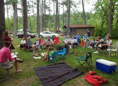

|
|
Harmony offers a lot more than just Sunday services and children's RE classes. Here are some of the many ways to experience Harmony:
- Family-friendly social gatherings: movie matinees,
potlucks, Trunk-or-Treat, Santa's Workshop, etc.
- Nonfiction book discussion groups
- Circle Suppers: rotating small group dinners
- Adult Religious Exploration: small group discussions
- Youth group outings
Harmony members, friends, and visitors are welcome to attend all events unless they are marked specifically as “Members Only”.
- Sunday, May 1 from 8:45-9:45 am - Meditation Group
- Join us the first Sunday of each month in room #7 of Lakeview's Building (building attached to Harmony). Everyone is invited to attend and no sign up is required. Please contact us if you have any questions.
- Sunday, May 1 at 10:00 am - Sunday Service (Childcare Provided)
- "Peace – It's Not Just a Nice Idea" by Dick Galloway - We'll be contrasting the view of peace as the absence of something negative – war vs. the positive presence of healing actions from scriptural, political and historical points of view, and shed light on hopeful signs in the face of today's terrorism. Yes, there are times we no choice but to fight, but not always.
- Sunday, May 1 at 11:30 am - Drop-in Parenting Group
- Harmony's parenting group meets after the service on the first Sunday of each month. May's topic of discussion will be managing our kids’ screen time. This is a drop-in group and all are welcome! We also invite you to join our Facebook group; just search for "Harmony UU Parents" and request to be added to the group!
- Wednesday, May 11 at 6:00 pm - Book Club & Potluck at Sue's
- Book Club meets on the second Wednesday of each month at Sue's house. The potluck is from 6:00-6:30 pm and the discussion is from 6:30-8:30. Please contact us for more information.
- Friday, May 13 at 8:00 pm - Men's Poker Night (Location TBD)
- The Men's Poker group meets on the second Friday of each month, and the location changes from month to month. Please contact us for more information.
- Saturday, May 14 at 9:30 am - Women's Coffee Club at Deerfield Starbucks
- Join us on the second Saturday of each month for our Women's Coffee Club. We meet at the Mason Montgomery Starbucks (8467 Mason Montgomery Rd., Mason, OH). No RSVP is required.
- Saturday, May 14 at 6:30 pm - Women's Social Night at Funny Bone Comedy Club
- Please join us for a night of laughs at the Funny Bone at Liberty Center! The cost is $22 per ticket. Visit Signup Genius to RSVP, then purchase your ticket with Funny Bone. To sit together we must all arrive early and be seated together, so plan to get there 6:15-6:30. Note: Funny Bone’s policy is that you must buy two items (food, drink, or merchandise) per person.
- Sunday, May 15 from 8:00-9:45 am - BYOT 2 (Pre-registration Required)
- Building Your Own Theology 2 is a 10-month Adult Religious Education program that meets on the second Sunday of each month. Pre-registration is required. Please contact us if you'd like to learn more about our Adult RE program.
- Sunday, May 15 at 10:00 am - Sunday Service (Childcare Provided)
- "Why Good People Are Divided by Politics and Religion" by Paul Smith - Find out why liberals, conservatives, and libertarians have such different intuitions about right and wrong, and why each side is actually right about many of its central concerns. This discussion will help you appreciate many different views of morality, and perhaps trade in some anger for understanding. Based on the book, The Righteous Mind, moral psychologist Jonathan Haidt shows that our moral intuitions originate in gut feelings (not reason) in six areas: caring, fairness, loyalty, authority, sanctity, and liberty. Bring a pencil and paper. You’ll be asked six questions to find out where you are on each spectrum.
- Sunday, May 15 from 11:30 am-1:00 pm - Practical Theology Group
- If you’d like to have informal yet intellectually satisfying conversations about theology, philosophy, spirituality, and morality, this discussion group is for you. Discussion topics will vary, there's no homework or books to read, and no commitment required. This discussion group meets every third Sunday at Harmony, in Lakeview Room #7.
- Sunday, May 27 at 10:30 am - Drum Circle
- Drum circles are held a few times per year, whenever there is a fifth Sunday in a month. All are invited to join us for an hour of stress relief, mind clearing, and noise. A great hour of fun, and drumming.
|

|